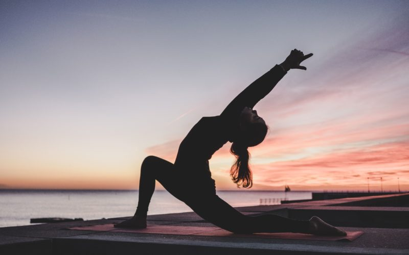
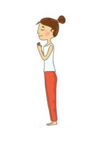
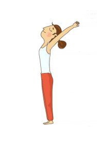
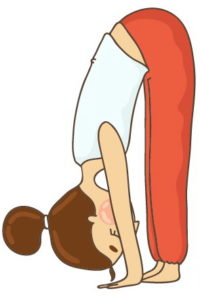
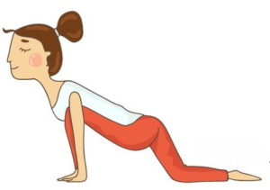
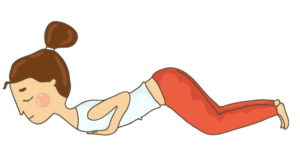
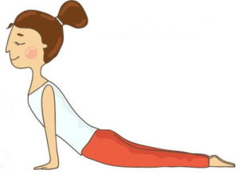
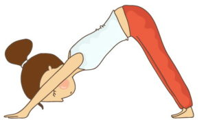

Сурья намаскар — Приветствие Солнцу
Комплекс упражнений Сурья Намаскар — самая распространенная техника йоги, которая олицетворяет приветствие Солнцу. Несмотря на простоту, комплекс эффективен и полезен как для начинающих, так и продолжающих практиковать йогу. В утреннее время достаточно 15-минутной зарядки, чтобы ощутить положительный результат. Особенно подходит для людей, ведущих сидячий и малоподвижный образ жизни.
Комплекс «Сурья Намаскар» базируется на трех элементах, без которых практика считается малоэффективной:
- асаны — последовательность выполнения 12-ти упражнений, которые соответствуют 12-ти знакам зодиака;
- пранаяма — техника дыхания. Старайтесь синхронизировать свое дыхание с каждым движением: вдох, выдох или задержка дыхания. При регулярной практике правильное дыхание приходит естественно, далее мы расскажем как правильно дышать;
- медитация — состояние ума, сосредоточенное внимание на поочередное выполнение поз.
Практику рекомендуют проводить с рассветом солнца, тогда эффект от занятий будет максимальный. В вечернее же время активизируется лунная энергия и полезно практиковать комплекс Чандра Намаскар, который состоит из 14 упражнений в обратной последовательности от Сурьи.
Польза Сурья намаскар
Выполнение комплекса упражнений йоги “Сурья Намаскар” наполняет тело человека энергией тонкого мира. Человек после занятий упражнением утром ощущает прилив сил, ощущает как, пробуждается и прорабатывается тело во время зарядки.
Человек, регулярно занимающийся утренней зарядкой по йоге, уже через короткое время способен ощутить положительный эффект от Сурья Намаскар:
- баланс энергетических систем организма — тело всегда наполнено жизненными силами, ощущается подъем и бодрость;
- улучшается сердечная деятельность организма;
- нормализуется работа пищеварительной системы за счет массажа абдоминальной области тела;
- налаживается работа почек и мочевыводящих путей за счет мягкого массажа при работе с мышцами спины и позвоночника;
- укрепляется нервная система;
- очищение кожи лица и тела;
- улучшается работа эндокринной системы;
- укрепляет мышцы спины и пресса, а следовательно работает с деформацией позвоночника;
- улучшает состояние фигуры;
- улучшает самочувствие;
- борется с такими болезнями: анемия, варикоз вен, астма, одышка, головная боль, запор, болезни почек, диабет, эпилепсия, аменорея, психические расстройства и пр.
Комплекс упражнений йоги Сурья Намаскар
Приветствие старайтесь проводить на восходе Солнца — считается, что занятие в это время наполняет человека энергией. Для начала хотим упомянуть о важных моментах в положении тела вначале всех практик по йоге.
Положение тела в йоге:
- лопатки сведены;
- плечи опущены;
- руки опущены вдоль тела;
- ноги вместе;
- подкрутить копчик (лобковую кость) вперед;
- мышцы живота напрячь.
Ниже приведено руководство для утреннего комплекса Приветствия Солнца: 12 поз в четкой последовательности в интеграции с дыханием.
Пранамасана (поза молитвы — приветствия)
Суть Пранамасаны заключается в наполнении тела праной при глубоком дыхании. Со вдохом поднимите руки вверх, соедините в намасте и с выдохом опустите до уровня груди. Произносим приветствуем Солнце и наступление нового дня внутри себя.
Глаза закрыты, дыхание свободное, под наблюдением. Почувствуйте тело, как бьется сердца, ощутите себя в потоке здесь и сейчас.
Польза Пранамасаны I
- повышение иммунитета;
- укрепляется нервная система человека, его эндокринная и лимфатическая системы;
- повышенное давление снижается;
- поза молитвы хорошо работает с сутулостью.
Хаста Уттанасана (поза наклона назад)
Поза наклона назад с вытянутыми руками — делаем вдох и поднимаем руки через стороны вверх, соединяем в намасте.
Старайтесь завести руки за голову как можно дальше и выполните прогиб в спине. При этом ощутите работу мышцы ног и пресса, работу ягодиц — они фундамент для проработки грудного отдела. Важно отслеживать положение поясницы и шеи, чтобы они не заламывались. Двигайтесь плавно и осознанно. Для выполнения позы Хаста Уттанасана делаем глубокий вдох.
Польза Хаста Уттанасаны
- укрепление мышечного корсета;
- удлинение позвоночника;
- работа с сутулостью спины, остеохондрозом;
- работает с плечевым поясом и грудной клеткой (раскрытие сердечной чакры).
Уттанасана (стойка с наклоном вперед)
Наклоняемся вниз, ладони располагаем вдоль ступней на коврике, втяните живот и расположите как можно ближе к ногам. Ноги при этом прямые, колени натянуты, тазом стремимся вперед.
Если вы только начали осваивать утренний комплекс — следите, чтобы при наклоне спина была ровной. С каждым разом вы станете более гибким — не теряйте стремление.Делаем глубокий выдох во время выполнения асаны Уттанасана.
Польза Уттанасаны I
- растягивается и удлиняется позвоночник;
- происходит массаж абдоминальной области тела;
- наклон стабилизирует нервную систему мозга, снимает усталость.
Ашва Санчаланасана I (поза наездника)
Правой ногой уйдите назад, левую — согните в колене, руки расположите по обе стороны. Следите за коленом — оно не должно выступать за пятку. При неправильно положении в Ашва Санчаланасана вероятна сильная нагрузка на колено, что может привести к травме.
Поднимаем голову вверх и делаем прогиб в спине. Отталкивается от пола руками и глубже прогибаемся в спине, раскрывая грудной отдел и вытягивая позвонок за позвонком. Плечи опущены. Для выполнения позы Наездника делаем глубокий вдох.
Важно: женщинам рекомендуется выполнять асану с левой стороны, а мужчинам — с правой, таким образом не будет нарушен поток энергии.
Польза Ашва Санчаланасаны I
- массаж спины и брюшной полости;
- укрепление ног;
- расширяет легкие за счет прогиба в спине;
- увеличивает гибкость позвоночника и грудной клетки;
- поза наездника придает уверенности и решительности.
Адхо Мукха Шванасана (Собака Мордой Вниз)
Левую ногу отводим назад к правой, располагаем стопы параллельно друг другу. Руками отталкиваясь назад, мы стараемся не сутулить спину и поднять таз. Голова расслаблена, шею не заламывать, плечи от ушей. Пятками стремитесь к полу.
Делаем глубокий выдох во время выполнения позы собаки мордой вниз.
Польза Адхо Мукха Шванасаны
- отлично растягивает все тело: ноги, щиколотки, плечи, запястья;
- асана снимает усталость, восстанавливает энергию;
- полезно в такой позе восстанавливать силы после выполнения динамических практик — виньяс.
Делаем глубокий выдох во время выполнения асаны.
Аштанга намаскар (поза с опорой на восемь точек)
Уверенно практикующие могут перейти в эту позу с выполнением чатуранги дандасаны. Начинающие же опускаемся коленями на пол. Ладони плотно прижать к коврику, руки согнуть в локтях и коснуться грудью и подбородком пола. В итоге ваше тело будет опираться на 8 точек: 2 ноги, 2 руки, 2 колена, подбородок и грудь.
Во время этой позы задержите дыхание. Задержка дыхания в аштанге намаскар следует после длинного выдоха.
Польза асаны Аштанга намаскар
- укрепление ног, рук, позвоночника;
- положительное воздействие на шейный отдел, плечевой пояс;
- поза оказывает полезное влияние на почки и надпочечники, щитовидку и половые железы.
Бхуджангасана (поза кобры)
С прямыми руками опускаемся бедрами на коврик. Прогнитесь в спине, откиньте голову назад, при этом плечи не зажимают шею. Зависните в позе несколько секунд без движений, прочувствуйте работу мышц спины и грудного отдела.
Во время выполнения асаны делайте глубокий вдох.
Польза Бхуджангасаны I
- асана полезна при скованном и деформированном позвоночнике;
- помогает раскрыть грудную клетку (работа с сердечной чакрой — анахатой), увеличивает объем легких;
- в такой позе активно прорабатываются глубокие мышцы тела;
- асана помогает наладить работу почек, желез внутренней секреции, обменных процессов внутри организма.
Адхо Мукха Шванасана
Повтор асаны — встаньте в позу «собака мордой вниз»: движение начинайте ягодицами вверх, держите равновесие и не перемещайте тело. Пятки старайтесь прижимать к полу.
Выполняя эту позу — сделайте выдох.
Ашва Санчаланасана
Повтор асаны — встаньте в «позу наездника». Левую ногу подать вперед и, согнув в колене, расположить между вытянутых рук. Со вдохом откинуть голову назад и выгнуть спину. Плечи от ушей.
Выполняя эту позу — сделайте вдох.
Уттанасана (поза наклона вперёд)
Приставляем правую ногу к левой. Повторяем позу наклона вперед. С выдохом опускаем голову к коленям, втянув живот. Спина при этом ровная, колени натянуты, таз стремится вперед.
Хаста Уттанасана (асана с поднятыми руками)
Со вдохом поднимаем руки через стороны вверх. Старайтесь завести руки за голову как можно дальше по мере того как делается вдох. Здесь же прогнитесь в спине. Внимание удерживайте на области поясницы и шеи, следите чтобы не было заломов. Двигайтесь плавно и осознанно.
Пранамасана (асана в позе молитвы)
Поза, характеризуется завершением одного полного цикла утреннего комплекса. Соедините ладони перед грудью в намасте, расслабьте тело и ощутите эффект от проделанных упражнений.
Йога комплекс Сурья Намаскар включает в себя 24 позиции. Для того чтобы выполнить полный цикл утренней практики, вам необходимо проработать все те же позиции с небольшой разницей: вам необходимо поменять ногу в позе наездника (правая вперед).
Резюмируя практику приветствия солнцу, можно выделить несколько нюансов по технике Сурья Намаскар:
- дыхание осуществляется носом;
- вдох и выдох идут в строгой последовательности с асанами;
- есть одна задержка дыхания в позе аштанга намаскар (поза с опорой на восемь точек);
- позы выполняйте плавно, старайтесь обходиться без резких движений;
- сосредоточьте внимание на том, что вы ощущаете, на работу тела;